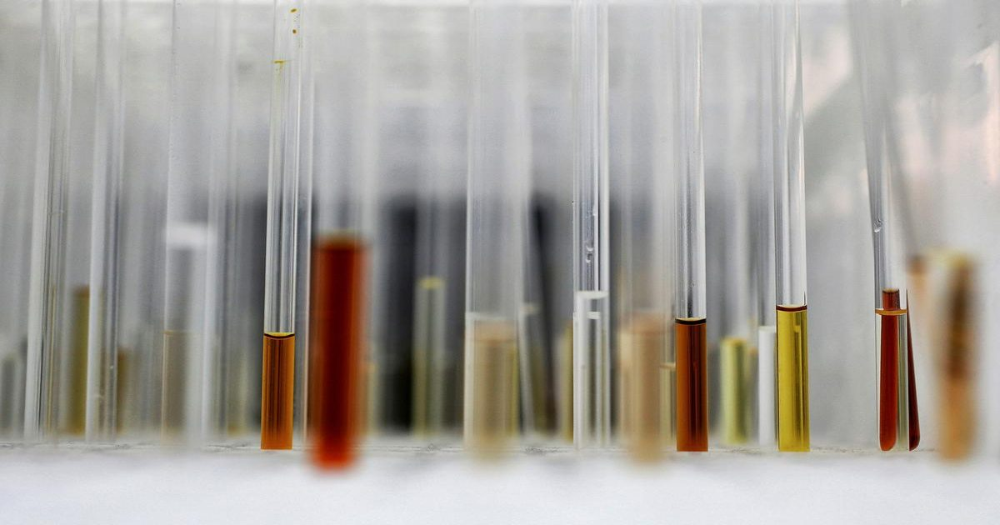

Как собрать науку
Человечество производит ошеломляющее количество новых знаний каждый день.
Вопрос в том, как понять все это - Хелен Пирсон Читать на Aeon

Человечество производит ошеломляющее количество новых знаний каждый день.
Вопрос в том, как понять все это - Хелен Пирсон Читать на Aeon